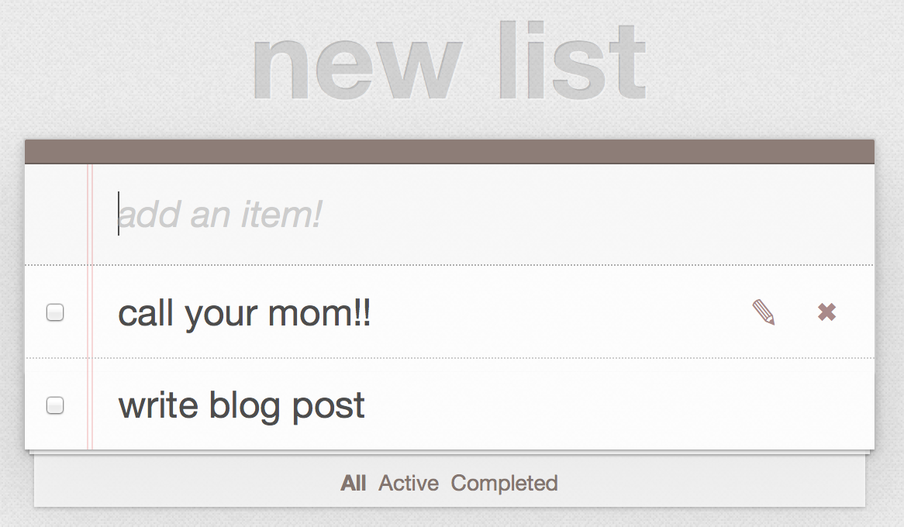

For a recent Flatiron School lab, we were tasked with building a to-do list app from scratch, mimicking the functionality of this TodoMVC implementation, including using Ajax.
But I gave myself an additional challenge. After years of watching my wife use NoScript to rule her browser with an iron fist, finding many sites shockingly unusable without Javascript, I’m sensitive to the need for graceful degradation. So I aimed to add Ajax to the features while preserving their functionality for users who may not have JavaScript enabled, or whose JavaScript is not functioning for some reason.
I thought I’d go over how I implemented this for the various features and share what I learned along the way.
List and item creation
For this particular to-do list app, list and item creation used almost exactly the same form. Since the sample app linked above actually only allows one list, I’ll focus on the new item form. Here’s the form in the view:
<%= form_for [@list, Item.new], html: { class: "new_todo", id: "new_todo" }, remote: true, authenticity_token: true do |f| %>
<%= f.text_field :description, id: "new-todo", placeholder: "add an item!", autofocus: true %>
<% end %>
You probably know that the remote option allows the form to be submitted by Ajax automatically. What might surprise you is that, by itself, this option breaks the ability for the form to be submitted without Ajax. If you turn JavaScript off and try to submit the form, you’ll get an error about a missing authenticity token.
This is because rails normally automatically generates a hidden input for the authenticity token, preventing cross-site forgeries. But Rails.js handles authenticity tokens differently, so as of Rails 4, using remote: true actually prevents Rails from generating that hidden input. To fix this, just add the option I used above, authenticity_token: true, to force it to generate the input anyway.
The other thing you have to do to make sure this form works without JavaScript is just make sure you have an appropriate response in your controller:
def create
@list = List.find(params[:list_id])
respond_to do |format|
@item = @list.items.create(item_params)
if @item.save
format.html { redirect_to @list }
format.js {}
end
end
end
When you submit a form normally, without Ajax, it expects an HTML response, so the code in the format.html block will be executed. It’s quite simple to include this, so that browsers without JavaScript know where to go after submitting the form.
Item deletion
At first when I added the ability to delete a list item, I used link_to, like so:
<%= link_to "", list_item_path(@list, item), method: :delete, class: "destroy", remote: true %>
It worked with JavaScript and I just kind of assumed it would work without it. But later I tried it and was surprised to find it didn’t work! I got an error about there being no route for a GET request to the list item path. But surely it should be a DELETE request...? Well, no. Browsers don’t support any requests other than GET for links; when you use the method option with link_to, Rails uses JavaScript behind the scenes to turn the request into the kind you specified. It’s impossible for a non-GET link_to to gracefully degrade.
There is a solution, however. Instead of link_to, you can use button_to, which generates a form and can therefore make a DELETE request. I thought this seemed like a huge pain, but it was actually pretty simple:
<%= button_to "✖", list_item_path(@list, item), method: :delete, class: " destroy", remote: true %>
I had to tweak the CSS a little to make it look the same, putting the delete icon in the link text rather than in an ::after pseudoelement, but other than that you can see that it’s pretty much exactly the same from the developer’s perspective. And now, users could delete list items even without JavaScript.
Item editing
The solution to the graceful degradation problem for item editing was slightly less simple. This is because the app was set up to use JavaScript to listen for a double-click on a list item and then show a hidden text field. Obviously, non-JavaScript edit forms are nt a problem, but here there was no obvious way to include that form on the list page without messing up the site’s design.
I came up with an alternative solution: I added an edit button that appears next to the delete button, as below:

This button simply links to an edit page for that item which mimics the design of the rest of the site.
Of course, I didn’t want this edit button to be visible to the JavaScript users who didn’t need it. Luckily, there’s an easy way to hide elements from JavaScript users while showing them to non-JavaScript users: just hide them with JavaScript.
Challenges
Not every feature had a straightforward non-JavaScript implementation, though. The one feature I couldn’t settle on how to implement was the ability to mark tasks as completed.
Again though, this was less of a technical limitation and more of a design limitation. Obviously it would be possible to include a form with which users could mark items as completed, but without JavaScript, it couldn’t be submitted as soon as the user clicks the checkbox; there would need to be a submit button, but there just didn’t seem to be a good, intuitive place to put it.
The other option would be for completion status to be edited on the item’s edit page, but that’s not great either. So for now I’ve left this feature JavaScript-only.
But why?
I hear you cry. Is it really worth it to go to the trouble to support non-JavaScript users?
Of course, sometimes you’ll have an app that depends on JavaScript for core functionality and just can’t work without it, and that’s OK. And non-JavaScript users are a small percentage of the total, so few people will be inconvenienced if your site does not degrade gracefully (not that that’s stopped people from tearing their hair out trying to support IE7).
But as with anything, it’s a tradeoff. If a certain feature is especially annoying to implement without JavaScript, especially if it’s not essential to your site, it’s probably fair to conclude that it’s not worth the effort.
But as you can see from the first examples here, it’s often trivially easy to maintain functionality for non-JavaScript users. And once you know about authenticity_token: true, for example, it’s easy to keep it in your toolbox and just use it unless you have a special reason not to.
With these habits you’ll end up preserving a lot of functionality for non-JavaScript users with minimal effort. To me, that’s a win-win.